deeplearn_cnn
卷积神经网络(（Convolutional Neural Network, CNN)相比神经网络出现了卷积层(Convolution层)和池化层(pooling层).
之前介绍的神经网络中, Affine相邻层的所有神经元之间都有连接, 这称为全连接(fully-connected).
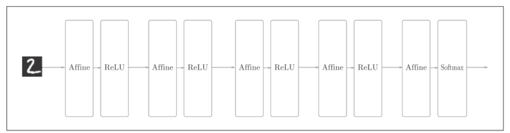
全连接的神经网络中, Affine层后面跟着激活函数ReLU层(或sigmoid层). 这里堆叠了4层"Affine-ReLU’组合, 然后第5层是Affine层, 最后由Softmax层输出最后最终结果.
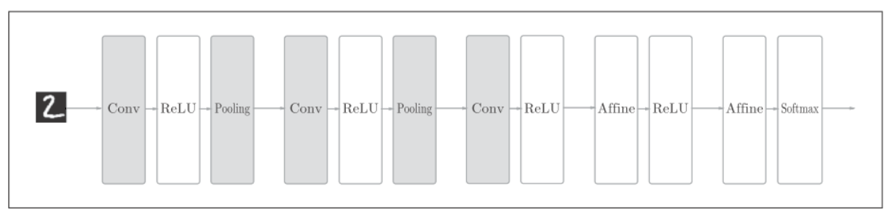
CNN中新增了Convolution层和Pooling层.CNN的层的连接顺序是"Convolution-ReLU-(Pooling)"(Pooling层有时会被省略). 这里可以理解为之前的"Affine-ReLU"连接被替换成了"Convolution-ReLU-(Pooling)"连接.
卷积层
全连接层忽略了数据的形状. 比如, 输入数据是图像时, 图像通常是高, 长, 通道上的3维形状. 但是, 向全连接层输入时, 需要将3维数据拉平为1维数据. 实际上, 前面提到的使用MNIST数据集的例子中, 输入图像就是1通道, 高28像素, 长28像素的(1,28,28)形状. 它们被排成一列, 以784个数据的形式输入到最开始的Affine层.
图像是3维形状, 这个形状中包含了空间信息. 比如, 空间上, 相邻的像素为相似的值, RGB的各个通道之间分别有密切的关联性/相距较远的像素之间没有什么关联等. 但是因为全连接层会忽视形状, 无法利用这些信息.
而卷积层可以保持形状不变. 当输入数据是图像时, 卷积层会以3维数据的形式接收输入数据, 并同样以3维数据的形式输出至下一层.
CNN中, 将卷积层的输入输出数据称为特征图(feature map).其中, 卷积层的输入数据称为输入特征图(input feature map), 输出数据称为输出特征图(output feature map).
卷积运算
卷积运算相当于图像处理中的滤波器运算.
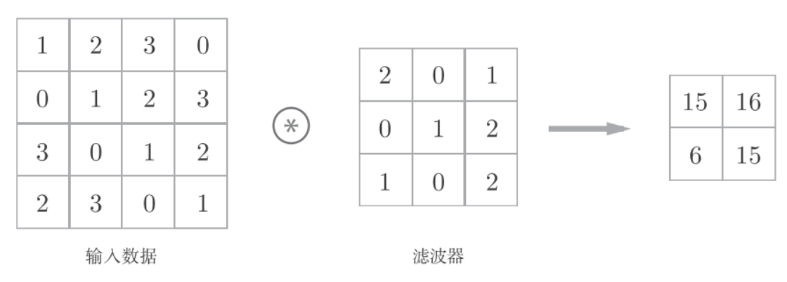
上图中, 输入的大小是(4,4),滤波器的大小是(3,3), 输出的大小是(2,2)
计算过程为:
卷积运算以一定的间隔滑动滤波器的窗口. 将各个位置上的滤波器元素和输入的对应元素相乘, 然后求和, 并将结果保存到输出的对应位置.
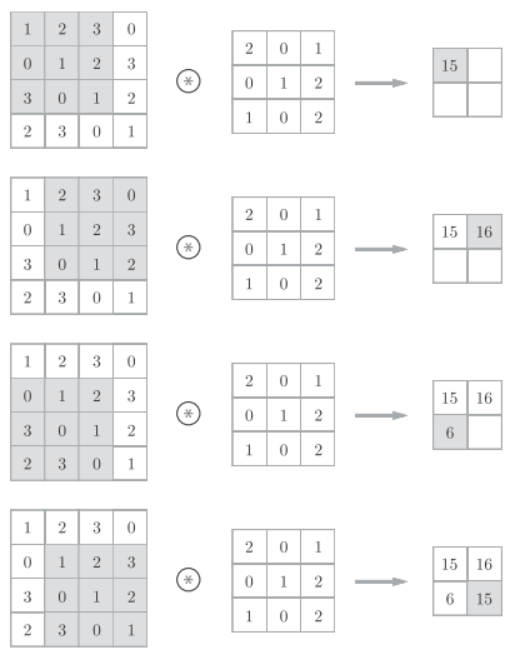
在全连接的神经网络中，除了权重参数，还存在偏置。CNN中，滤波器的参数就对应之前的权重。并且，CNN中也存在偏置。如下图:
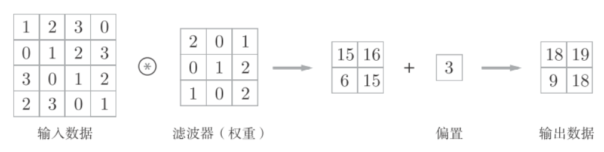
填充
在卷积处理之前, 有时要想输入数据的周围填入固定的数据(比如0), 这称为填充(padding)
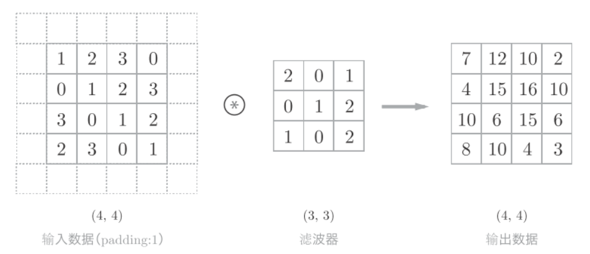
步幅
应用滤波器的位置间隔称为步幅(stride), 如下图步长为2.
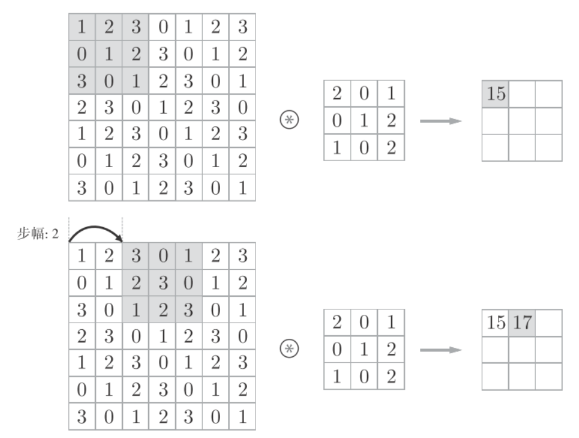
三维卷积运算
通道方向上有多个特征图时,会相应创建多通道的滤波器, 按通道进行输入数据和滤波器的卷积运算, 并将结果相加,从而得到输出
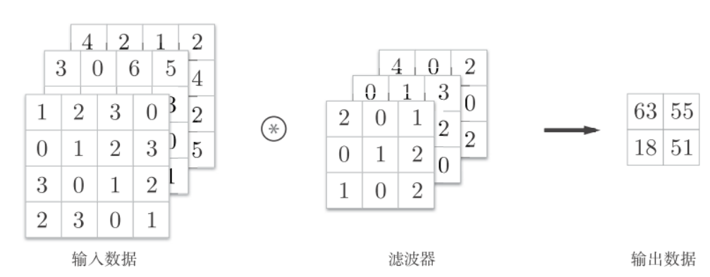
注意输入数据和滤波器的通道数要一致.
多个滤波器
三维数据表示为多维数组时, 书写顺序为(channel, height, width), 比如通道数为C, 高度为H, 长度为W的数据的形状可以写成(C,H,W). 滤波器也一样, 按照(channel, height, width)的顺序来书写, 比如通道数为C, 滤波器高度为FH(Filter Height), 长度为FW(Filter Width)时, 可以写成(C,FH,FW).
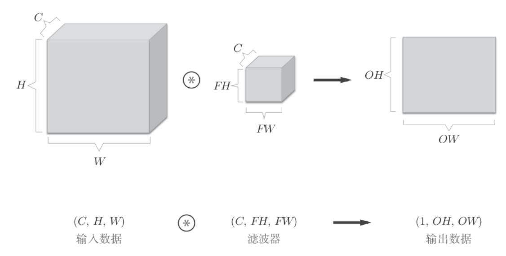
上图中, 数据输出是一张特征图, 就是通道数为1的特征图, 如果需要多张特征图, 剧需要用到多个滤波器.
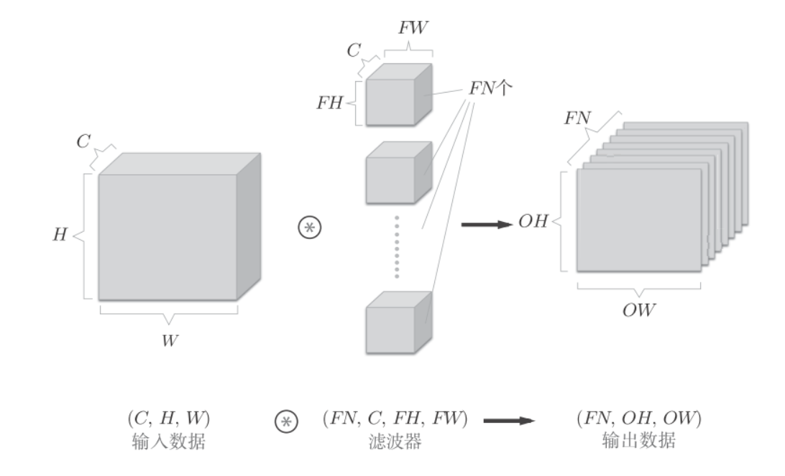
上图中, 通过使用FN个滤波器, 输出特征图也有FN个. 讲这FN个特征图汇集在一起, 就得到了形状为(FN,OH,OW)的方块.
作为4维数据, 滤波器的权重数据要按照(output_channel, input_channel, height, width)的顺序书写. 比如通道数为3, 大小为5*5的滤波器有20个时, 可以写成(20,3,5,5).
档案也可以加上偏置项:
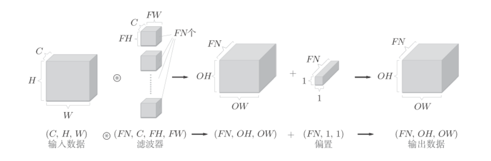
批处理
卷积批处理和全连接批处理一样, 就是在数据的开头加入批的维度, 比如(batch_num,channel,height,width). 如下图, 网络间传递的是4维数据, 对这N个数据进行了卷积运算.
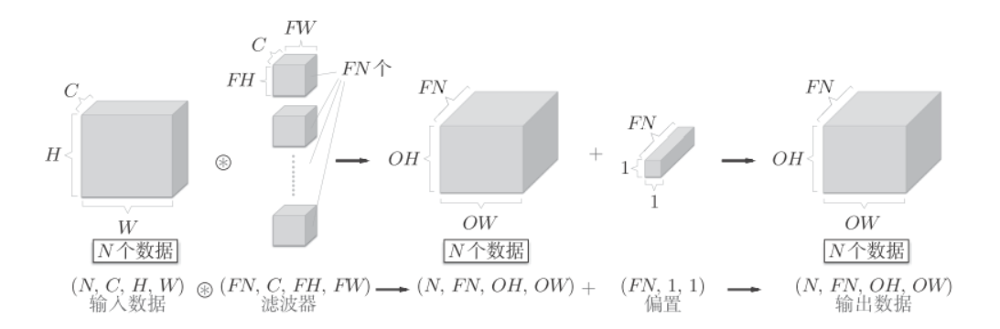
CNN中各层间传递的数据是4维数组.比如(10,1,28,28), 它对应的就是10个高为28, 长为28, 通道数为1的图片.用python表示:
x = np.random.rand(10, 1, 28, 28) # 随机生成数据
x.shape # (10, 1, 28, 28)如果想访问第一个数据, 则输入x[0]即可.
x[0].shape # (1, 28, 28)方位第一个数据的第一个通道的空间数据
x[0, 0] # 或者x[0][0]池化层
如下图, 将2*2的区域缩放成1个元素(取其中的最大值)
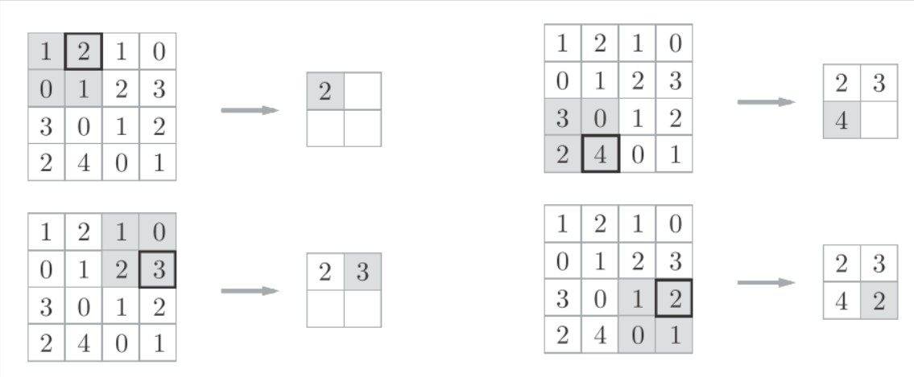
除了MAX池化之外, 还会有Average池化(取均值).
池化层的特点:
- 没有要学习的参数, 只是提取最大值或平均值
- 通道数不发生变化
- 对微小的位置变化具有鲁棒性, 输入数据发生微小偏差时, 池化仍会返回相同的结果, 如果下图, 像素虽有有微小的变动, 但是池化的结果相同